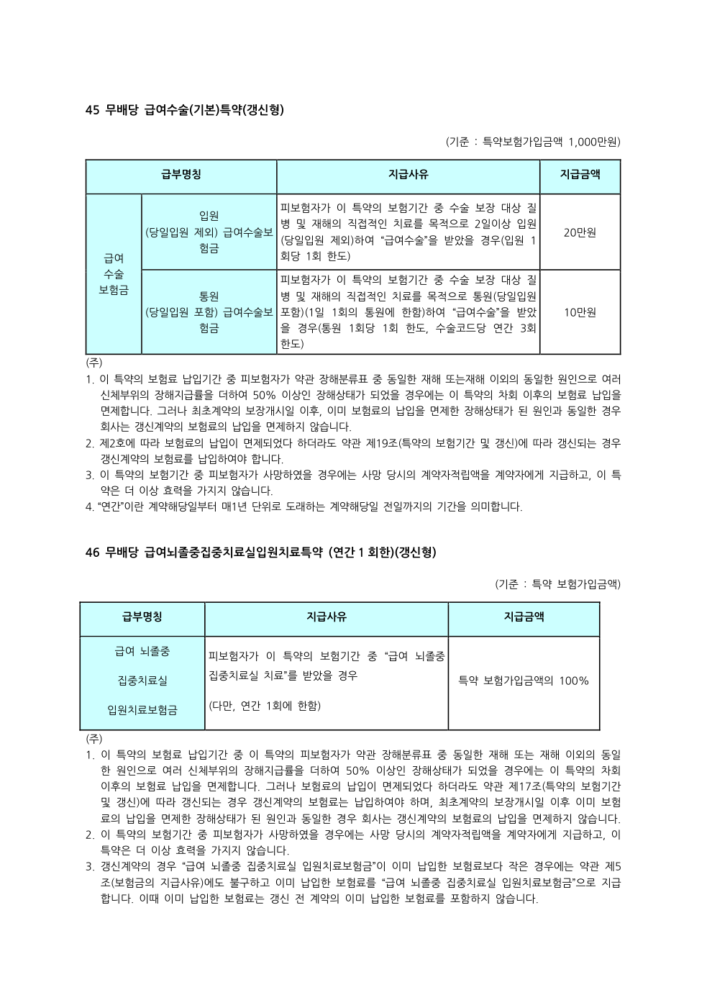

‹특약 상세 안내
교보마이플랜건강보험Ⅱ
급여뇌졸중집중치료실입원치료특약
갱신형LH(무해약환급금형)
치료 이해하기
뇌졸중과 중환자실 집중치료 이해하기
언제 중환자실 치료가 필요한가요?
뇌졸중 환자 중 의식, 호흡, 혈압 등 전신 상태를 면밀하게 관찰해야 하거나 신경학적 상태가 불안정한 경우 집중적인 감시와 치료가 필요할 수 있습니다.
중환자실에서는 무엇을 하나요?
중환자실에서는 주요 장기 기능과 활력징후를 지속적으로 관찰하고, 상태 변화에 빠르게 대응합니다. 필요한 경우 호흡·순환 보조와 각종 약물치료 등 환자 상태에 맞춘 집중치료가 시행됩니다.
모든 뇌졸중 환자가 입원하나요?
그렇지는 않습니다. 중환자실 입원 여부는 뇌졸중의 종류와 중증도, 의식 상태, 호흡·순환 상태 등 임상 상황에 따라 의료진이 결정합니다.
보험에서는 무엇을 보나요?
이 특약은 일반적인 입원 여부가 아니라 약관에서 정한 뇌졸중과 급여 집중치료실 입원치료 등의 지급조건을 기준으로 합니다.
관련 치료법 더 알아보기
국가기관·대학병원의 의료정보를 새 창에서 확인하실 수 있습니다.
보장 안내
이 특약은 어떤 보장인가요?
약관상 급여 뇌졸중 집중치료실 치료
교보생명 공식 상품요약서 원문 보기
교보마이플랜건강보험Ⅱ(무배당) 상품요약서 (2026.08.26), PDF 49페이지. 해당 특약의 보장내용은 원문에서 확인해 주세요.

※ 원문 페이지에는 다른 특약의 일부 내용이 함께 포함될 수 있습니다. 보장조건은 가입한 특약의 약관을 기준으로 확인해 주세요.
보장 안내
주요 보장
- 급여 뇌졸중 집중치료실 입원치료보험금
횟수: 연간 1회
영상 안내
영상으로 치료와 보장 내용 알아보기
특약에 해당하는 치료와 주요 보장 내용을 설명합니다.
꼭 확인하세요
보장 시 꼭 확인하세요
실제 보험금 지급은 해당 상품과 특약 약관에서 정한 지급조건을 기준으로 합니다.
의료정보 참고자료 · 질병관리청 국가건강정보포털 「뇌졸중」 · 질병관리청 국가건강정보포털 「중환자실 치료」 · 서울아산병원 「뇌경색·뇌졸중 치료」
보험정보 · 교보마이플랜건강보험Ⅱ 해당 특약 약관
의료정보는 일반적인 치료 이해를 위한 안내이며 실제 치료방법은 환자 상태에 따라 달라질 수 있습니다. 보험금 지급은 약관상 지급조건을 기준으로 합니다.
보험정보 · 교보마이플랜건강보험Ⅱ 해당 특약 약관
의료정보는 일반적인 치료 이해를 위한 안내이며 실제 치료방법은 환자 상태에 따라 달라질 수 있습니다. 보험금 지급은 약관상 지급조건을 기준으로 합니다.
본 화면은 특약의 이해를 돕기 위한 안내입니다. 세부 보장내용과 보험금 지급사유, 제한사항 등은 해당 보험약관을 확인해 주세요.